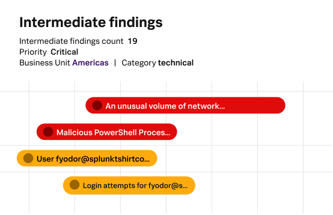

Overview
Splunk IT Service Intelligence (ITSI) is an enterprise-grade AIOps solution that uses machine learning for predictive analytics, event correlation, and service-level monitoring. Now part of Cisco after the 2023 acquisition, Splunk excels at processing massive volumes of machine data.
ITSI builds on Splunk's legendary log analysis capabilities to provide service-centric views of IT operations. It correlates events across infrastructure, applications, and security to identify issues before they impact business services.
The platform is particularly strong in complex enterprise environments with heterogeneous infrastructure and high data volumes. Its Machine Learning Toolkit enables custom ML models for predictive alerting.
Key Features
ML Analytics
Machine learning for anomaly detection, predictive alerting, and trend analysis across massive data sets.
Event Correlation
Automatically correlate events across different systems to reduce alert noise and identify root causes.
Service Intelligence
Service health scores based on KPIs from multiple data sources. Visualize business service dependencies.
Predictive Analytics
Predict capacity issues, performance degradation, and failures before they impact users.
Log Management
Industry-leading log ingestion, parsing, and search at any scale. SPL query language.
Security (SIEM)
Enterprise Security add-on provides SIEM capabilities integrated with ITSI.
Pros & Cons
Advantages
- Handles massive data volumes
- Powerful SPL query language
- Excellent ML capabilities
- Strong security/SIEM integration
- Service-centric visibility
- Extensive ecosystem
- Now backed by Cisco
Disadvantages
- Very expensive licensing
- Complex deployment
- Steep learning curve
- Resource intensive
- Requires dedicated team
- Licensing complexity
Pricing
Flexible pricing based on infrastructure scale and features:
Free/Open Source
Community edition available for basic use
Professional
Enhanced features for growing teams
Enterprise
Advanced capabilities and support
Node/Device Based
Pricing scales with monitored infrastructure
Cloud/SaaS Options
Hosted solutions available
Support Packages
Professional services and training
Best Use Cases
Ideal For:
- Enterprise IT: Large organizations managing complex infrastructure
- DevOps Teams: Automation and continuous deployment
- MSPs: Managed service providers monitoring client systems
- Cloud-Native: Organizations running multi-cloud environments
- Hybrid Infrastructure: Mixed on-premise and cloud deployments
- Network Operations: Teams managing network performance
May Not Be Ideal For:
- Very small businesses with simple needs
- Organizations lacking technical expertise
- Companies seeking fully managed solutions
- Teams not committed to implementation
Comparison
Platform Strengths
Key Advantages
- Proven reliability and scale
- Strong community support
- Extensive integrations
- Flexible deployment options
Market Position
- Industry-leading solution
- Enterprise adoption
- Active development
- Comprehensive documentation
Screenshots & Interface
Explore Splunk's data platform:

Frequently Asked Questions
What's the difference between free and paid versions?
Free/community editions provide core functionality, while paid versions add enterprise features like advanced monitoring, dedicated support, SLAs, and additional integrations.
How does pricing scale?
Pricing typically scales based on number of nodes/devices monitored, users, or data volume. Enterprise plans offer custom pricing for large deployments.
What integrations are available?
Extensive integrations with cloud platforms (AWS, Azure, GCP), monitoring tools, ticketing systems, databases, and hundreds of other technologies via plugins and APIs.
Is there a learning curve?
Initial setup requires technical expertise, but the platform provides extensive documentation, training resources, and community support to help teams get started.
Can it monitor cloud infrastructure?
Yes, the platform supports monitoring across on-premise, cloud, hybrid, and multi-cloud environments with native integrations for major cloud providers.
Recommended Certifications
To leverage Splunk for IT operations and security analytics, pursue these official Splunk certifications. Each validates skills in data analysis, monitoring, and enterprise deployment.

Splunk Core Certified User
Search, use fields, create alerts, lookups, and build basic reports and dashboards.
Splunk Core Certified Power User
Advanced searching, reporting, and correlation techniques for complex data analysis.
Splunk Enterprise Admin
Install, configure, and manage Splunk Enterprise environments at scale.
Splunk Enterprise Architect
Design and deploy large-scale Splunk environments with high availability and performance.
Final Verdict
Splunk ITSI is the choice for large enterprises with complex environments and big budgets. Its data processing capabilities are unmatched. However, the cost and complexity make it unsuitable for smaller organizations.